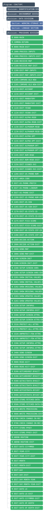
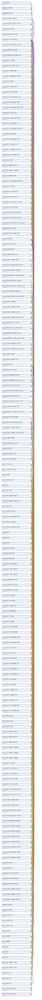
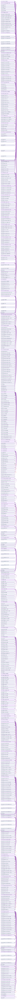

Low MDI 24.3 / 推奨戦略 BigBang / ファンイン 0 ・ ファンアウト 1
注釈レポート
COBOL 移行分析レポート：COACTUPC
生成日: 2026-07-26 ファイル名: COACTUPC.cbl
MDI サマリー
| 指標 | スコア | リスクランク |
|---|---|---|
| 総合MDI | 24.3 | Low |
指標内訳
| 指標ID | 指標名 | 実測値 | 寄与スコア |
|---|---|---|---|
| CC | サイクロマティック複雑度 | 2 | 1.00 |
| GD | GO TO 密度 | 0.062 | 4.12 |
| AD | ALTER 文数 | 0 | 0.00 |
| ND | ネスト深度 | 3 | 5.62 |
| RD | REDEFINES 密度 | 0.105 | 3.51 |
| CS | スコープ横断依存数 | 128 | 10.00 |
高リスクパターン
- GO TO 密度が 0.062 です（非構造化制御フロー）
- REDEFINES が 57 件存在します
タグ付きコメント一覧
なし
移行戦略提案
判定: ビッグバン移行
MDI スコアが低く、プログラム間依存も少ないため、ビッグバン移行が実現可能です。一括置換によるリスクは低いと判断されます。
AST（構造概観）

制御フローグラフ（CFG）

データフローグラフ（DFG）
